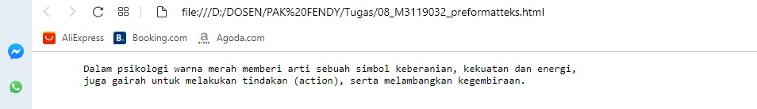

Preformatted Text
HTML Preformatted Text digunakan untuk merepresentasikan sebuah blok teks preformat.
Teks yang ditulis didalam Preformatted Text memiliki struktur berdasarkan ketetapan tifografi,
artinya teks ditulis apa adanya sesuai format yang ditulis didalam file (dokumen HTML).
Codingan
<!DOCTYPE html>
<html>
<head>
<title>Preformatted Text</title>
</head>
<body>
<pre>
Dalam psikologi warna merah memberi arti sebuah simbol keberanian, kekuatan dan energi,
juga gairah untuk melakukan tindakan (action), serta melambangkan kegembiraan.
</pre>
</body>
</html>
Hasil codingan

Analisis
Preformatted Text mempunyai fungsi sama dengan Monospaced Font seperti pada sebelumnya hanya
saja bedanya lebih memudahkan jika terdiri dari baris yang banyak. Tampilannya akan sedikit menjorok
ke depan dari monospaced font.
Back